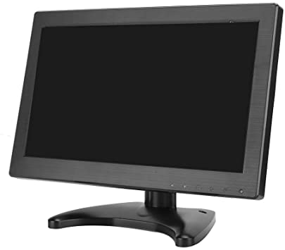
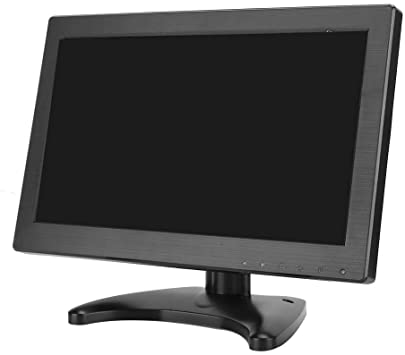

Monitor IPS y otros tipos de monitores
| Marca | Modelo | Pulg. | Precio |
|---|---|---|---|
| Adesso | T24I | 24" | $ 32.199 |
| Dell | P2419HC | 24" | $ 52.999 |
| HP | V270 | 27" | $ 29.694 |
| Lenovo | P24H20 | 24" | $ 72.419 |
| Philips | E2720H | 27" | $ 30.999 |
| Samsung | Cf391 | 32" | $ 46.261 |
¿Cuál es el mejor para ti, incluso si eres GAMER?
¿Has oído hablar sobre el monitor IPS? No vayas a comprarlo aún, no sin antes leer este artículo en el que mencionamos sus ventajas y desventajas frente a otros tipos de monitores, porque son muchos los que hay en el mercado y cada uno tiene lo suyo.
Pero antes de tocar las características del monitor que te interesa, sería bueno referirnos a estos aparatos desde lo más básico: ¿cómo están clasificados?, ¿qué componentes tienen?, etc.
Veremos tipos de monitores y su clasificación, y cuando hayas leído todos los contenidos de nuestro índice, sabrás exactamente cuál de estos equipos se adapta mejor a tus necesidades. Mucho ojo con esta información.
Tipos de monitores y su clasificación
No te impacientes por saber qué es un monitor IPS, primero hay que revisar los tipos de monitores y su clasificación, porque a primera vista todos son casi iguales, pero como dice un conocido refrán, “el diablo (o, en este caso, lo interesante) está en los detalles”.
 


Monitor CRT
En su lista de los tipos de monitores que existen, el sitio web ClasificaciónDe menciona primero a los monitores CRT o de tubo de rayos catódicos. Dichos tubos, ubicados en la parte trasera del aparato, los hacían sumamente grandes y pesados.
Estos producían electrones que chocan con la pantalla, de manera que esta fluoresce y crea una imagen que es transmitida desde una computadora o una antena. Con todas estas características del monitor, ya te debes estar haciendo una idea de su apariencia.
Los monitores CRT son aquellos que pululaban en las oficinas en los 80 y 90, y que de seguro vistes en tus clases de computación en el colegio si es que tienes más de 30 años actualmente. Como te imaginarás, están obsoletas y muy por debajo de lo que un monitor IPS ofrece.
Monitor LCD
Los monitores LCD (Liquid Crystal Display) son aquellos cuyo mecanismo consisten en moléculas de cristal líquido que están alineados entre dos láminas polarizadas con electrodos transparentes.
Cuando cambia la carga eléctrica que circula entre los electrodos, los cristales líquidos se mueven y permiten el paso de diferentes cantidades de luz y color.
Aquí ya hablamos de las características del monitor más común en el mercado. Además, como señala BenQ, esta tecnología está presente en la mayoría de celulares, tablets, laptops, pantallas de señalización digital, entre otros, incluyendo el monitor IPS, pero eso lo tocaremos a fondo más adelante.
Monitor TFT
Es una variante del monitor LCD que destaca por el uso de transistores para cada uno de los píxeles de la pantalla, lo que permite que las imágenes no pierdan nitidez aunque se reproduzcan de forma ampliada. Con esto último, ya debes haber entendido la importancia de las características del monitor TFT.
Básicamente, está hecha para ver imágenes en pantallas gigantes sin que haya un pixelado y todo tenga la apariencia de videojuego de 8 bits, como en la vieja NES de Nintendo. Sin embargo, existen tipos de monitores TFT para escritorio.
Monitor LED
Este está compuesto por diodos emisores de luz (LED) que forman píxeles que, a su vez, se convierten en imágenes con gran resolución y dinamismo. Entre los diferentes tipos de monitores de computadora, este se destaca por su realismo y colores más vívidos.
Pantalla plasma
Estaban compuestas por unas celdas diminutas situadas entre dos láminas cristal que contienen gases nobles (neón, argón y xenón) que se convierten en plasma, lo que origina una luz muy potente.
Las características del monitor lo volvían idóneo para ver contenidos de gran tamaño, de hasta 80 pulgadas. Sin embargo, tal como señala El Confidencial, los plasma dejaron de existir, pues fabricantes como Samsung dejaron de producirlos en el 2014 al sucumbir frente a otras opciones en el mercado, entre ellos el monitor IPS.
Monitores OLED y QLED
El monitor OLED funciona con la tecnología LED, solo que en este caso cada píxel posee su propio diodo emisor de luz, lo que da lugar a un color e iluminación más puros. Esto lo convierte en uno de los tipos de monitores más sofisticados que existen actualmente, pero tiene competencia.
Por otro lado, está el monitor QLED, que es muy parecido al anterior (razón por la cual los pusimos juntos), pero se diferencia por tener detrás una luminación de color azul. En el caso de la OLED, esta es de color blanco, según el portal Hard Zone.
A eso debemos añadir que ambos tipos de monitores son fuertes rivales, ya que LG y Sony son propietarias de la tecnología OLED, mientras que la QLED fue desarrollada por Samsung.
El monitor IPS y sus características
Ya te adelantamos que el monitor IPS está clasificado dentro de los LED. Su nombre viene de In-Plane Switching (de variación en el plano) y en él las moléculas de cristal líquido están alineadas en paralelo y tienen la capacidad de desplazarse horizontalmente.
Esto da como resultado un mejor rendimiento del color y, sobre todo, ángulos de visualización extremadamente amplios. Es decir, a diferencia de otros tipos de monitores, este ofrece colores que se siguen percibiendo bien incluso desde una posición muy a la izquierda o la derecha en un rango de 178 grados.
Ventajas
Las características del monitor IPS lo vuelven ideal, por ejemplo, para aquellos que necesitan de precisión en el color, como los diseñadores y los fotógrafos, quienes creen que sus trabajos están perfectos hasta que los ven en otros soportes, como en un afiche impreso.
De hecho, ViewSonic señala que el monitor IPS es compatible con las tecnologías profesionales de espacio de color, como Adobe RGB. Por tanto, si lo tuyo son las artes gráficas, consigue como sea una de estas pantallas.
Y, hablando de artes gráficas, si quieres empezar en este mundo, un buen primer paso sería llevar el curso online de Adobe Photoshop CC desde cero. O de repente ya manejas esta herramienta, así que puedes hacer toda nuestra Especialización en Diseño Publicitario para que no solo hagas creaciones interesantes, sino que lideres proyectos en torno a ellas.
Del mismo modo, el monitor IPS es óptimo para los editores de video, como los que llevan el curso online de Adobe Premiere desde cero, o los ingenieros arquitectos que crean planos en 2D y 3D después de haber terminado el curso online de Autocad completo.
Desventajas
Pero porque no todo lo que brilla es oro, ni siquiera si se trata del brillo de tu pantalla, las características del monitor IPS no lo hacen destacar en todos los puntos y uno en los que flaquea es en el contraste estático.
Hablamos de la diferencia entre un pixel brillante (blanco) y otro oscuro (negro). Además, en un monitor IPS de gama baja, es posible que observes un resplandor blanco desde los ángulos externos cuando visualices imágenes con poca iluminación.
En cualquiera de los tipos de monitores que existen, siempre hay un brillo que puede resultar fastidioso, sobre todo ahora que pasas más tiempo frente a la laptop, haciendo trabajo remoto. En ese sentido, no está de más que le eches un ojo a nuestra guía de cómo bajar el brillo de la PC.
Volviendo a las desventajas del monitor IPS, este tiene mayor desenfoque de movimiento respecto a otras opciones en el mercado. Y a eso habría que añadir que, por regla general, el tiempo de respuesta de esta pantalla es menor.
Nuevamente, según Hard Zone, este es el tiempo que demora un píxel en pasar de un estado a otro. El mismo portal señala que las características del monitor IPS le dan un tiempo de respuesta de 4 milisegundos (ms) en el mejor de los casos y de 5 ms en el peor.
Este detalle hace que se produzca el ghosting o ‘efecto fantasma’. De acuerdo con WikiVersus, este consiste en que las imágenes se tornan borrosas debido a que los píxeles físicos no pueden actualizarse tan rápido como se mueven los elementos que aparecen en pantalla.
Aun así, ViewSonic insiste en que los tiempos de respuesta del monitor IPS han mejorado con los años, de modo que pueden satisfacer a los más exigentes en este aspecto, como los gamers.
¿Me conviene un monitor IPS si soy gamer?
A lo largo de este artículo, pareciera que ya te respondimos esta pregunta al hacer énfasis en cómo el monitor IPS se queda atrás en el tiempo de respuesta de los pixeles. Esos pocos milisegundos pueden hacer la diferencia entre la victoria o la derrota, pero no en todos los casos. Cuando te hablamos de tres buenos videojuegos que seguro nunca jugaste, recalcamos que en esta forma de entretenimiento existen varios géneros, desde los viejos arcades hasta los que son de aventura o estrategia, y no en todos la velocidad es lo que más importa.
Si eres un fanático de los first person shooter o videjuegos de disparo en primera persona, definitivamente necesitas que la pantalla reaccione ni bien tengas al rival en la mira. Por ello, en principio, un monitor IPS no te conviene. Por otro lado, de repente lo tuyo son juegos de mundo abierto, como GTA V, donde lo importante es disfrutar del viaje y los escenarios tan bien hechos que parecen reales. Ahí, las características del monitor IPS te harán sentir en primera clase.
Ya ni qué decir con un monitor 4K IPS, con el cual tendrás la sensación de que puedes palpar todos los escenarios que aparecen enfrente de ti. Y si aun así te preocupa el tiempo de respuesta, hoy en día existe más de un monitor IPS 144hz, que puede actualizar los píxeles 144 veces cada segundo. Si vas, por ejemplo, a Amazon, puedes encontrar un monitor IPS 144hz a 289 dólares. Pero, ojo, para aprovecharlo al máximo hay otras cuestiones que debes considerar, como tu velocidad de conexión a Internet (si estás jugando en línea) o tu interfaz HDMI. Según Muy Computer, en su versión 2.0, este puede alcanzar los 60 FPS (fotogramas por segundo) en 4K y 144 Hz en 1080p.
En conclusión, ¿habiendo diferentes tipos de monitores de computadora, cuál es el mejor para ti? Eso depende. Un monitor IPS te asegura una buena calidad en los colores, y si optas por un modelo de gama alta, también será idóneo para juegos como Fortnite o Call of Duty: Warzone. Tendrás todo lo necesario para ser un ganador.